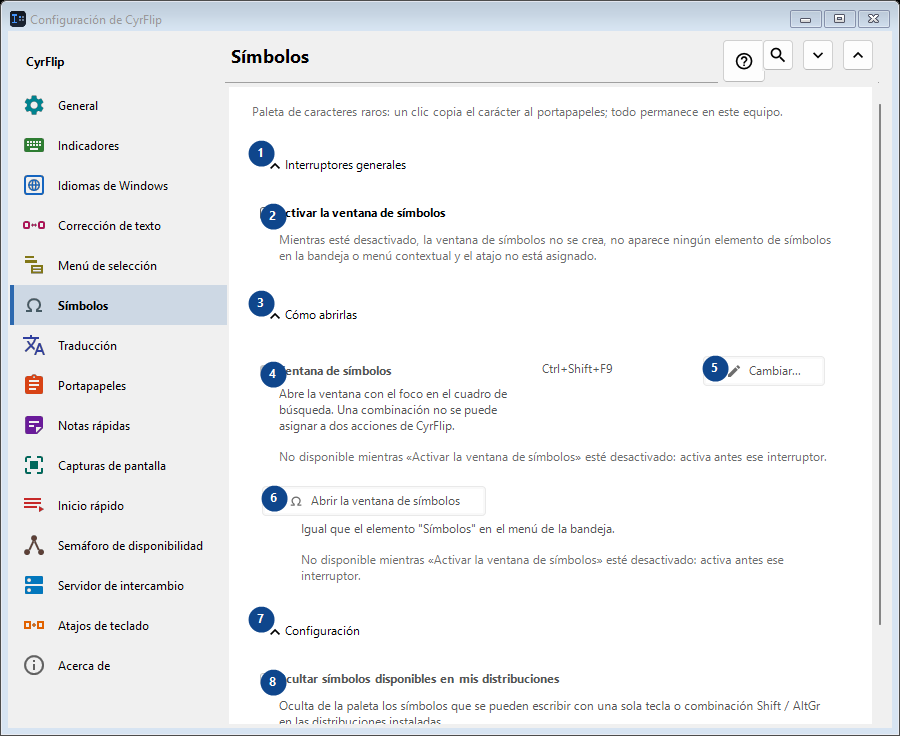
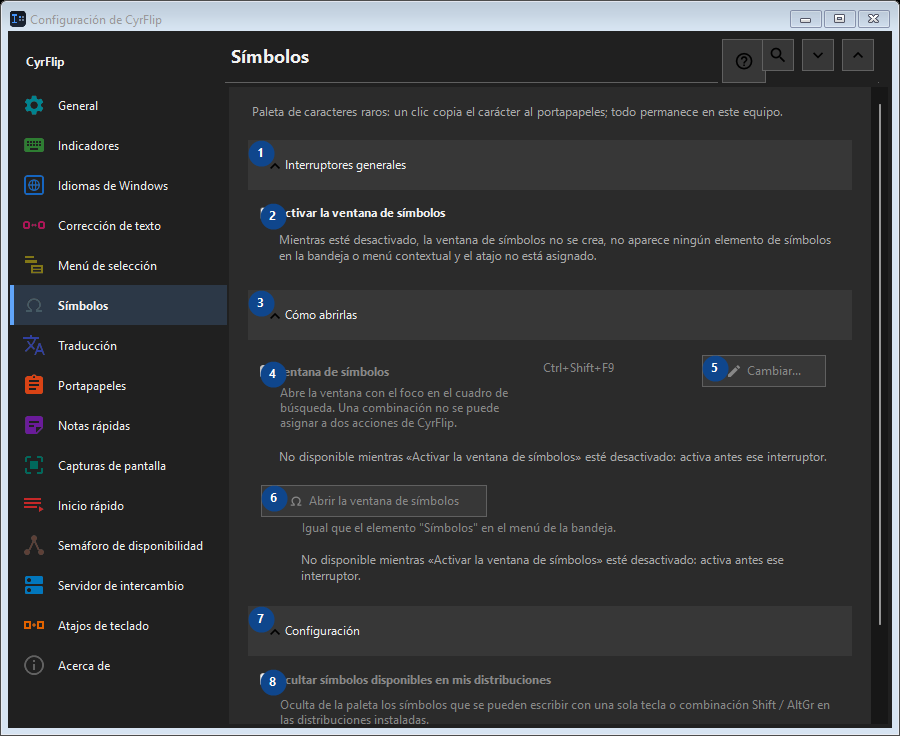

Símbolos
Para qué sirve
Paleta de caracteres raros: un clic copia el carácter al portapapeles; todo permanece en este equipo.


Orden de uso
Los ajustes se aplican de inmediato. No hay un orden obligatorio; usa los grupos siguientes.
Elementos
1. Interruptores generales
Usa este comando para la acción indicada. Lee cualquier confirmación antes de aceptarla.
Tus atajos2. Activar la ventana de símbolos
Mientras esté desactivado, la ventana de símbolos no se crea, no aparece ningún elemento de símbolos en la bandeja o menú contextual y el atajo no está asignado.
Tus atajos3. Cómo abrirlas
Usa este comando para la acción indicada. Lee cualquier confirmación antes de aceptarla.
Tus atajos4. Ventana de símbolos
No disponible mientras «Activar la ventana de símbolos» esté desactivado: activa antes ese interruptor. Este elemento no está disponible. Activa primero la función o selecciona una entrada.
Tus atajos5. Cambiar - Ventana de símbolos
No disponible mientras «Activar la ventana de símbolos» esté desactivado: activa antes ese interruptor. Este elemento no está disponible. Activa primero la función o selecciona una entrada.
Tus atajos6. Abrir la ventana de símbolos
No disponible mientras «Activar la ventana de símbolos» esté desactivado: activa antes ese interruptor. Este elemento no está disponible. Activa primero la función o selecciona una entrada.
Tus atajos7. Configuración
Usa este comando para la acción indicada. Lee cualquier confirmación antes de aceptarla.
Tus atajos8. Ocultar símbolos disponibles en mis distribuciones
No disponible mientras «Activar la ventana de símbolos» esté desactivado: activa antes ese interruptor. Este elemento no está disponible. Activa primero la función o selecciona una entrada.
Tus atajos